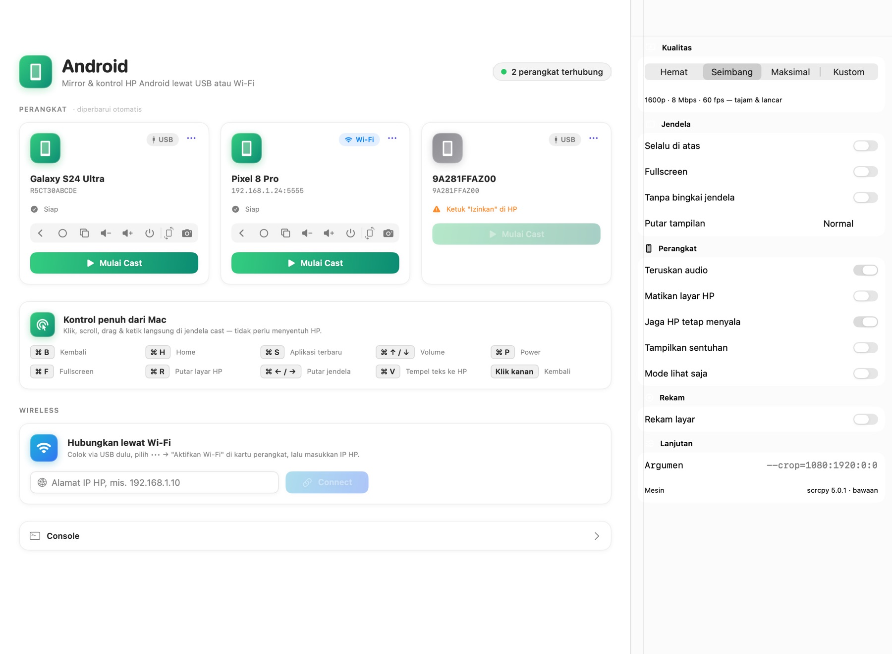

Semua yang kamu butuhkan,
dalam satu aplikasi
Dibangun di atas scrcpy — mesin mirroring paling cepat dan ringan untuk Android — dibungkus aplikasi Mac yang rapi.
Kontrol penuh dari Mac
Klik, scroll, drag, dan ketik pakai mouse & keyboard Mac. Tidak perlu menyentuh HP sama sekali.
File manager
Jelajahi isi HP, unduh foto & video ke Mac, unggah file dengan drag & drop, ganti nama, dan hapus.
USB atau Wi-Fi
Colok kabel untuk kualitas terbaik, atau aktifkan mode wireless dengan satu klik dan bebas kabel.
Rotasi layar
Portrait atau landscape dalam sekali klik — jendela otomatis menyesuaikan. Cocok untuk main game dan nonton video.
iPhone & iPad
Tampilkan layar + audio iPhone lewat kabel tanpa install apa pun, atau pakai iPhone Mirroring & AirPlay.
Rekam & screenshot
Rekam layar HP langsung ke folder Movies, atau ambil screenshot ke Desktop dengan satu tombol.
100% lokal
Semua berjalan di Mac kamu. Tidak ada akun, tidak ada cloud, tidak ada data yang dikirim ke internet.
Tanpa install tambahan
scrcpy & adb sudah ada di dalam app. Tidak perlu Homebrew, tidak perlu Android Studio.
Android atau iPhone? Dua-duanya bisa.
🤖 Android
- Mirror sampai 120 fps dengan latensi rendah
- Kontrol penuh mouse & keyboard + tombol Back, Home, Recent
- Audio diteruskan ke speaker Mac
- File manager, rekam layar & screenshot
- Paksa portrait / landscape
iPhone & iPad
- USB: layar + audio, tanpa install apa pun di iPhone
- Jendela otomatis ikut rotasi iPhone, bisa diputar manual
- iPhone Mirroring untuk kontrol penuh (macOS Sequoia + iOS 18)
- AirPlay untuk mirror wireless
Apple tidak mengizinkan aplikasi lain mengontrol iPhone lewat USB/AirPlay. Untuk klik & ketik dari Mac, Djie Cast membuka iPhone Mirroring resmi Apple.
Rapi, modern, terasa seperti app Mac asli

Siap dalam 1 menit
Download
Unduh file DjieCast-1.0-beta.dmg dari tombol di atas atau halaman Releases GitHub.
Seret ke Applications
Buka DMG, lalu seret ikon Djie Cast ke folder Applications.
Buka pertama kali
Klik kanan → Open → Open. Langkah ini hanya sekali karena app belum dinotarisasi Apple.
Pertanyaan yang sering muncul
Apakah Djie Cast benar-benar gratis?
Ya, gratis selamanya dan open source di bawah lisensi MIT. Tidak ada iklan, tidak ada langganan. Donasi bersifat sukarela.
Bagaimana cara mengaktifkan USB Debugging di Android?
Buka Pengaturan → Tentang ponsel, ketuk “Nomor bentukan” (Build number) 7 kali sampai Opsi Developer aktif. Lalu buka Opsi Developer dan nyalakan “USB Debugging”. Saat dicolok ke Mac, ketuk “Izinkan” di HP.
Kenapa iPhone tidak bisa dikontrol lewat kabel?
Apple membatasi kontrol iPhone hanya untuk fitur resmi mereka. Lewat USB dan AirPlay, Djie Cast bisa menampilkan layar & audio. Untuk kontrol penuh, gunakan iPhone Mirroring (macOS Sequoia + iOS 18) yang bisa dibuka langsung dari Djie Cast.
Kenapa muncul peringatan saat pertama dibuka?
Djie Cast belum dinotarisasi Apple (butuh akun developer berbayar). Aplikasinya aman — kode sumbernya bisa kamu periksa sendiri di GitHub. Cukup klik kanan → Open sekali saja.
Apakah data saya dikirim ke internet?
Tidak. Djie Cast bekerja sepenuhnya lokal antara Mac dan HP kamu. Tidak ada akun, analitik, atau server.
Apakah bisa dipakai untuk main game?
Bisa. Gunakan preset kualitas “Maksimal” lewat kabel USB untuk hasil terbaik (hingga 120 fps), dan paksa layar ke landscape dari tombol rotasi.
Suka dengan Djie Cast? ☕
Djie Cast dibuat oleh Adjie Kurniawan dan dibagikan gratis untuk semua. Donasi sekecil apa pun sangat membantu pengembangan fitur baru.
- Buka aplikasi bank atau e-wallet berlogo QRIS (GoPay, OVO, DANA, ShopeePay, m-banking).
- Scan kode QRIS di samping, masukkan nominal seikhlasnya.
- Konfirmasi donasi ke nomor di bawah. Terima kasih! 🙏

QRIS · Ruang Kiitaa · NMID ID1026525837765